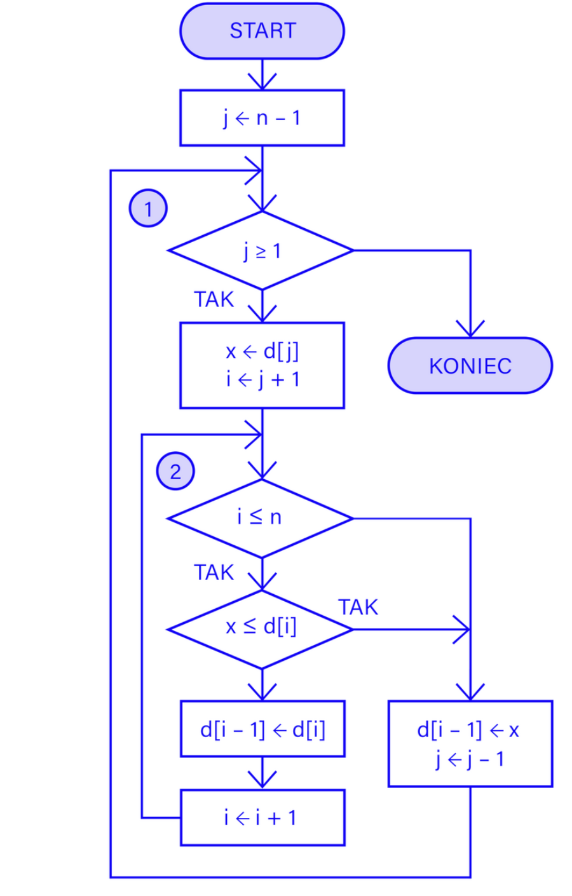

1. Przejdź przez zbiór od drugiego elementu do ostatniego.
2. Wybierz bieżący element i oznacz go jako element do wstawienia.
3. Porównuj wybrany element z elementami wcześniejszymi, zaczynając od elementu bezpośrednio przed nim.
4. Jeżeli istnieje element przed elementem wybranym i jest od niego większy, przesuń ten element w prawo.
5. Wstaw wybrany element w miejsce "dziury" powstałej po przesunięciu elementów większych.
6. Powtarzaj kroki 2-5 dla każdego kolejnego elementu w zbiorze.
7. Zakończ proces sortowania i wyeksportuj uporządkowany zbiór danych.
public class SortowaniePrzezWstawianie{
static void sortowaniePrzezWstawianie(int[] zbior){
int rozmiar = zbior.length;
for(int i = 1; i < rozmiar; i++){
int klucz = zbior[i];
int j = i - 1;
while(j >= 0 && zbior[i] > klucz){
zbior[j+1] = zbior[j];
j--;
}
zbior[j + 1] = klucz;
}
}
public static void main(String[] args){
int[] zbior = {7,2,5,5,3,2,8,6};
sortowaniePrzezWstawianie(zbior);
System.out.print("Posortowany zbior: ");
for (int i = 0; i < zbior.length; i++){
System.out.print(zbior[i] + " ");
}
}
}
Schemat blokowy
